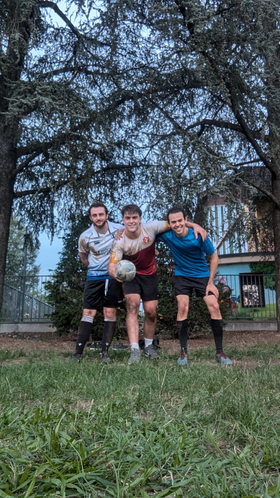

Benvenuto al San Lazzaro Rugby Club
Siamo un club amatoriale di rugby a San Lazzaro. Se hai 14 anni o più e vuoi provare il rugby o semplicemente allenarti con noi due volte a settimana, vieni a trovarci.
Iscriviti OraSan Lazzaro Rugby Club
Dal 2024, San Lazzaro e dintorni possono scoprire il rugby con il nostro club. Offriamo attività per principianti e per chi vuole allenarsi, a partire dai 14 anni.
Ti invitiamo a provare il rugby con noi: il primo mese è gratuito! Successivamente, la quota è di solo 8 euro al mese. Durante le prime quattro settimane gratuite, avrai l'opportunità di conoscere il rugby e sperimentare gli allenamenti che migliorano la forma fisica, aumentano la stamina e sviluppano la forza.
Non perdere questa occasione per migliorare il tuo benessere e divertirti con noi!
Il San Lazzaro Rugby Club ha gli Spogliatoi
Il nostro club ha ora accesso agli spogliatoi e alle docce del PalaYuri. Un grande passo in avanti per i nostri allenamenti, specialmente con l'inverno in arrivo! Scopri tutti i dettagli su questo articolo.
Risolto il problema dell'illuminazione
Il club ora è illuminato durante la durata degli allenamenti, inoltre diamo il benvenuto a due nuovi membri. Il prossimo passo sono gli spogliatoi; la crescita continua! Scopri di più su questo articolo.
Grazie per l'Open Day!
Un grande ringraziamento a tutti coloro che hanno partecipato al nostro Open Day il 27 agosto. È stato un piacere vedervi in campo e condividere con voi la passione per il rugby. Speriamo di rivedervi presto per gli allenamenti settimanali!

Questa Settimana
I due allenamenti settimanali sono stati svolti con una crescente qualità ed intensità, inoltre come novità abbiamo luci fisse e spogliatoio, e 11 membri!